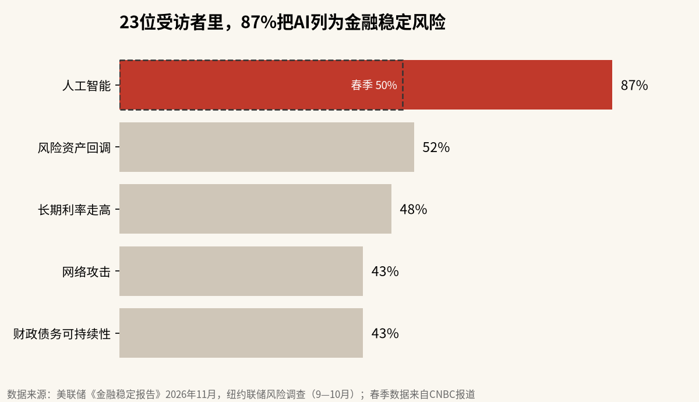
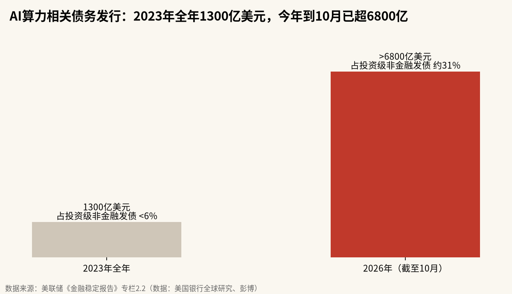

美联储把AI排到金融风险第一位：比估值更难看清的，是表外那3万亿美元
纽约联储问了23位市场人士，87%把AI列为金融稳定风险，春季只有50%。报告里更硬的数字在专栏2.2：七家科技巨头尚未起租的租约超过1万亿美元，担保和照付不议合同超过2万亿美元，都不在资产负债表的债务栏里。
周五美股收盘后一个小时，美联储发布了半年一次的《金融稳定报告》。最先被转发的是一个百分比：纽约联储在9月和10月调查了23位来自券商、银行、基金和咨询机构的市场人士，87%把人工智能列为美国金融稳定的突出风险，春季那一轮只有50%。
这个数字吓人，却不是报告里最要紧的部分。AI对金融体系的风险，正在从“股价贵不贵”转到“合同和债务链条有多长”。银行体系本身仍然稳健，可最大的几家科技公司实际承担的经济风险，比它们账面上的负债大得多。
87%的受访者在担心三件事

排在AI后面的是风险资产回调（52%）、长期利率走高（48%）、网络攻击和财政债务可持续性（各43%）。报告说，和春季相比，提到AI、长期利率和网络攻击的人增加得最多。
受访者对AI的担心分成三类。第一类是估值：AI相关股票的盈利一旦不及预期，估值下修可能引发更大范围的回调。第二类是网络安全，既包括国家级黑客借AI发动攻击，也包括前沿模型自己造成的意外破坏。第三类是“复杂形式的AI相关融资”。
前两类大家都熟悉。第三类才是这份报告真正花了篇幅去拆的。
还有一个时间细节。这轮问卷是9月和10月收回来的，那时英伟达的CEO还是黄仁勋。11月12日他辞去CEO，周五芯片股又领跌大盘，纳斯达克综合指数跌0.9%。87%这个数字还没算进最近这一周。
一张图看AI债务涨得有多快

报告专栏2.2的标题是《数据中心建设中的杠杆》。按美国银行和彭博的数据，先进计算相关的债务发行量到今年10月已经超过6800亿美元，2023年全年是1300亿美元，大约5倍。
更说明问题的是占比。2023年，这类借款在非金融投资级公司债发行里不到6%；2026年升到约31%。高评级企业债市场每发三笔债，就有一笔和AI算力有关。
存量也不小。报告估计，和先进计算相关的公开市场债务余额已经超过1.1万亿美元。私募信贷市场里还有不少大额交易，美联储自己也承认，这部分的规模更难测量。
看到这里我第一反应是去翻1990年代的对比。报告确实画了这张图：把亚马逊、谷歌母公司Alphabet、Meta、微软、甲骨文这五家超大规模云厂商2020年以来的累计资本开支，和1995年开始的电信宽带周期放在一起，按同期GDP折算。两条曲线一直贴得很近，最近AI这条在加速，报告的原话是，当前周期的投资节奏“可能很快超过”1990年代电信周期。
租约和担保比债务长得更快
债务只是看得见的那一部分。报告统计了亚马逊、Alphabet、博通、Meta、微软、英伟达、甲骨文七家公司在财报附注里披露的其他义务：
| 项目 | 规模（未折现） | 怎么产生的 |
|---|---|---|
| 尚未起租的租约 | 超过1万亿美元 | 云厂商和第三方数据中心开发商签长期租约，开发商拿租约去借建设贷款 |
| 担保、照付不议合同等 | 超过2万亿美元 | 包括GPU厂商为下游买家提供的GPU残值担保 |
| 合计 | 超过3万亿美元 | 报告说这部分增长比债务余额更快 |
“照付不议”的意思是不管用不用，到期都得付钱。“残值担保”是芯片厂承诺，几年后GPU作为抵押品至少还值多少钱，好让买GPU的公司更容易借到钱。
这些安排本身不违规，也很常见。麻烦在于叠加。报告写得很直白：超大规模云厂商和GPU设计公司在给小公司提供这类债务支持的同时，往往还入股这些小公司，形成一种“循环融资”的结构。评级高的大公司就这样把信用借给了评级低、融资渠道窄的小公司，而自己的资产负债表上暂时看不出来。
我反复看了两遍脚注。报告特别提醒，这些租约和担保是未折现金额，和已经折现的表内债务不能直接相加比较。所以“3万亿”不能当成3万亿的负债来读。它说明的是方向：一旦行业下行，这七家公司要承担的损失，可能远大于它们表内负债所显示的规模。
报告也给了乐观的一面。正因为大公司接下了这些风险，下行时它们可能替整个金融体系吸收一部分损失。
风险最后落在谁手里
链条往下走，风险分了几层。
科技巨头和GPU公司的表内债券，主要由共同基金、养老金和保险公司持有，评级高，问题不大。表外安排里常见特殊目的实体（SPE），也就是专门为一个项目设立、单独借钱的公司。它们发行的优先级债务风险较低，次级债和股权部分则落在高收益债基金、寿险公司、商业发展公司（BDC，一种主要放贷给中型企业的基金）和其他私募债工具手里。
银行也不是旁观者。美国最大几家银行控股公司对大型科技公司、数据中心开发商、算力相关SPE、私募信贷工具和公用事业公司的风险敞口合计接近1万亿美元，这些敞口会在年度压力测试里评估。
杠杆的另一头在对冲基金。报告说，对冲基金杠杆率升到了2013年有完整数据以来的最高水平，股票、相对价值和宏观策略的杠杆都在纪录或接近纪录的位置。
与此同时，报告对银行体系的判断仍是“稳健且有韧性”，券商杠杆也在历史低位。
说白了，眼下最脆弱的环节不在银行，而在银行之外：寿险公司、BDC、对冲基金，以及那些靠一纸租约借钱盖机房的开发商。
估值回调伤股民，合同违约才伤体系
美联储对AI风险的判断是清楚的：股价回调会让持股的人亏钱，但真正可能传导到整个金融体系的，是那条从科技巨头延伸到SPE、私募信贷和寿险资产负债表的合同链。报告点出的是脆弱环节，还没有出现断点：银行稳健，数据中心相关的投资级债券今年发了1500多亿美元，一直有买家接。
主要的风险在时间错配。租约和担保是按多年设计的，GPU的经济寿命可能更短；一旦算力租金下跌，残值担保就会被触发，压力会从下游小公司传回上游大公司。另一面也有机会：如果需求撑得住，大公司强劲的现金流会继续兜底，报告担心的“放大损失”就不会出现。
判断要不要改，主要看两类信号。看空的人最该留意的是新型云服务商的融资条件和GPU残值担保有没有开始兑现，以及BDC的赎回申请会不会重新抬头。看多的人则要看超大规模云厂商的资本开支有没有放缓，以及AI相关公司债利差是否继续保持低位。这几项一旦同时转向，87%就不再只是一个调查数字。
免责声明：本文数据来自美联储《金融稳定报告》（2026年11月）及公开报道，未折现的租约与担保金额不可与表内债务直接比较，不构成任何投资建议。
X 上怎么看
结论 · 偏空：机构担忧快速升温，但银行体系稳健，风险集中在表外合同链
▲ 看多3 位
▼ 看空5 位
英伟达受挫后，靠它循环融资支撑的新型云服务商一下全乱了，很多地方的数据中心正是它们建的。
观点为 X 用户当日公开帖子的中文摘要，忠于原文但有删减；标「未核实」的为预测、个人推测或单一来源说法。立场为人工判断。
数据来源
- 受访人数、调查时间、三类AI担忧、债务发行量与占比、表外义务、银行敞口、对冲基金杠杆均来自美联储《金融稳定报告》（2026年11月）原文。
- 87%与春季50%，以及其他风险的提及比例，来自CNBC等媒体对报告图表的转述，与X上多条转述一致。
- 租约和担保为未折现金额，不能与表内债务直接相加比较；“超过3万亿美元”为两项下限之和。
- 纳斯达克指数周五跌幅来自美联社收盘汇总。
- https://www.federalreserve.gov/publications/files/financial-stability-report-20261113.pdf
- https://www.cnbc.com/2026/11/13/ai-risks-financial-system-federal-reserve.html
- https://stockanalysis.com/news/fed-financial-stability-report-ai-risk-november-2026/
- https://apnews.com/article/wall-street-stocks-dow-nasdaq-12c1e8155fb85c3c7b09e058ed6d3c74
- https://x.com/BreakingAlert_/status/2121348511182532924
- https://x.com/BreakingAlert_/status/2121348673254613387
- https://x.com/BreakingAlert_/status/2121348705664028870
- https://x.com/louischeng760/status/2121362385499992450
- https://x.com/phi_ci/status/2121350843358232968
- https://x.com/Jacky8048/status/2121362898731868545
- https://x.com/AntonLaVay/status/2121261572324491517